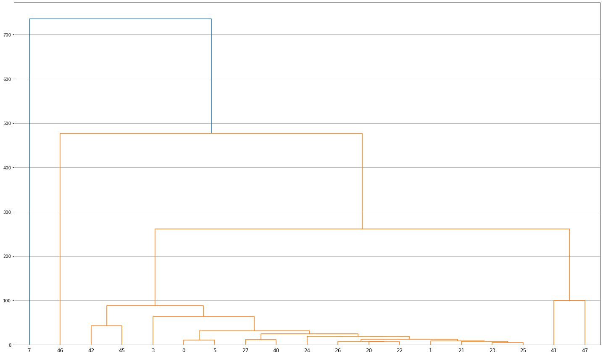

Feature importance per form type¶
This notebook analyses per-type feature importance of form-based clusters.
import numpy as np
import pandas as pd
import geopandas as gpd
import dask.dataframe
import matplotlib.pyplot as plt
import urbangrammar_graphics as ugg
from matplotlib.lines import Line2D
from sklearn.ensemble import RandomForestClassifier
Form signatures¶
%time data = dask.dataframe.read_parquet("../../urbangrammar_samba/spatial_signatures/clustering_data/form/standardized/").set_index('hindex')
%time data = data.replace([np.inf, -np.inf], np.nan).fillna(0)
%time data = data.compute()
CPU times: user 38.8 s, sys: 35.3 s, total: 1min 14s
Wall time: 1min 44s
CPU times: user 27.6 ms, sys: 0 ns, total: 27.6 ms
Wall time: 23.8 ms
CPU times: user 1min 7s, sys: 43.2 s, total: 1min 50s
Wall time: 1min 51s
data
| sdbAre_q1 | sdbAre_q2 | sdbAre_q3 | sdbPer_q1 | sdbPer_q2 | sdbPer_q3 | sdbCoA_q1 | sdbCoA_q2 | sdbCoA_q3 | ssbCCo_q1 | ... | lseCWA_q3 | lteOri_q1 | lteOri_q2 | lteOri_q3 | lteWNB_q1 | lteWNB_q2 | lteWNB_q3 | lieWCe_q1 | lieWCe_q2 | lieWCe_q3 | |
|---|---|---|---|---|---|---|---|---|---|---|---|---|---|---|---|---|---|---|---|---|---|
| hindex | |||||||||||||||||||||
| c000e094707t0000 | -0.947406 | -0.371977 | 0.020285 | -0.901199 | -0.237045 | -0.023143 | -0.000419 | -0.001515 | -0.010221 | -0.046170 | ... | 0.073064 | 0.031571 | 0.196520 | 0.424415 | -0.611681 | -0.502087 | -0.311160 | -0.022562 | -0.002733 | -0.004738 |
| c000e094763t0000 | -0.913567 | -0.420861 | -0.271703 | -0.903627 | -0.428003 | -0.336729 | -0.000419 | -0.001515 | -0.010221 | -0.035325 | ... | -0.254395 | -1.016655 | -0.161371 | 0.011093 | 0.148709 | 0.214520 | -0.125943 | -0.019044 | -0.002654 | -0.004738 |
| c000e094763t0001 | -0.878137 | -0.411587 | -0.284021 | -0.900393 | -0.416250 | -0.350010 | -0.000419 | -0.001515 | -0.010221 | -0.034917 | ... | -0.285074 | -0.897625 | -0.161371 | 0.103698 | 0.148709 | 0.250036 | -0.200268 | -0.019323 | -0.002654 | -0.004738 |
| c000e094763t0002 | -0.952475 | -0.421566 | -0.283919 | -0.968400 | -0.429947 | -0.343165 | -0.000419 | -0.001515 | -0.010221 | -0.065649 | ... | -0.280682 | -0.927382 | -0.161371 | 0.177408 | 0.302689 | 0.250036 | -0.120718 | -0.018825 | -0.002654 | -0.004738 |
| c000e094764t0000 | -0.964878 | -0.420861 | -0.271703 | -0.972440 | -0.420006 | -0.315861 | -0.000419 | -0.001515 | -0.010221 | -0.066832 | ... | -0.280682 | -1.016655 | -0.104108 | 0.185348 | 0.302689 | 0.250036 | -0.105044 | -0.018825 | -0.002659 | -0.004738 |
| ... | ... | ... | ... | ... | ... | ... | ... | ... | ... | ... | ... | ... | ... | ... | ... | ... | ... | ... | ... | ... | ... |
| c102e644989t0111 | -0.311466 | -0.431706 | -0.373463 | -0.082269 | -0.459270 | -0.389532 | -0.000419 | -0.001515 | -0.010221 | 0.132837 | ... | 0.199797 | 1.288365 | 0.440493 | 0.197816 | -0.351250 | -0.580453 | -0.704637 | -0.000200 | -0.002667 | -0.004738 |
| c102e644989t0112 | -0.326671 | -0.461825 | -0.371855 | -0.149873 | -0.528701 | -0.386678 | -0.000419 | -0.001515 | -0.010221 | 0.136559 | ... | 0.195101 | 1.288365 | 0.440493 | 0.290197 | -0.351250 | -0.580453 | -0.693005 | -0.000669 | -0.002667 | -0.004738 |
| c102e644989t0113 | -0.094236 | -0.364761 | -0.304254 | 0.024972 | -0.347371 | -0.283669 | -0.000419 | -0.001515 | -0.010221 | 0.021411 | ... | 0.199797 | 1.288365 | 0.440493 | 0.197816 | -0.351250 | -0.580453 | -0.704637 | -0.000843 | -0.002667 | -0.004738 |
| c102e644989t0114 | -0.477667 | -0.568464 | -0.390033 | -0.600170 | -0.646516 | -0.472676 | -0.000419 | -0.001515 | -0.010221 | 0.424887 | ... | 0.008079 | -0.855901 | 0.189420 | -0.560233 | -0.341815 | -0.580453 | -0.704637 | -0.000898 | -0.002667 | -0.004738 |
| c102e644989t0115 | -0.413094 | -0.545952 | -0.382834 | -0.400108 | -0.610332 | -0.440413 | -0.000419 | -0.001515 | -0.010221 | 0.160613 | ... | 0.008079 | -0.203827 | 0.440493 | 0.231812 | -0.351250 | -0.580453 | -0.638809 | -0.000200 | -0.002543 | -0.004738 |
14539578 rows × 177 columns
labels_l1 = pd.read_parquet("../../urbangrammar_samba/spatial_signatures/clustering_data/k8_form_labels.pq")
labels_l2_4 = pd.read_parquet("../../urbangrammar_samba/spatial_signatures/clustering_data/clustergram_c4_form_labels.pq")
labels_l2_2 = pd.read_parquet("../../urbangrammar_samba/spatial_signatures/clustering_data/clustergram_c2_form_labels.pq")
labels = labels_l1.copy()
labels.loc[labels.k8 == 4, 'k8'] = labels_l2_4['9'].values + 40
labels.loc[labels.k8 == 2, 'k8'] = labels_l2_2['8'].values + 20
labels.k8.value_counts()
1 5544712
5 3774274
0 1554431
25 681861
22 664692
21 511727
23 502758
26 425631
27 275571
20 250872
24 138339
40 111659
3 62701
42 31800
45 5105
41 1680
47 1128
7 477
43 79
46 65
48 9
44 4
6 3
Name: k8, dtype: int64
outliers = [6, 44, 48, 43]
mask = ~labels.k8.isin(outliers)
Overall similarity¶
Similarity of clusters can be represented by hierarchical dendrogram generated using Ward’s agglomerative clustering.
from scipy.cluster import hierarchy
group = data.loc[mask].groupby(labels.loc[mask]['k8'].values).mean() # cluster centroids
Z = hierarchy.linkage(group, 'ward')
fig, ax = plt.subplots(figsize=(25, 15))
dn = hierarchy.dendrogram(Z, labels=group.index)
plt.grid(True, axis='y', which='both')

Feature importance per cluster¶
labels.k8.unique()
array([ 0, 5, 20, 24, 1, 21, 25, 22, 26, 23, 27, 40, 42, 3, 48, 45, 7,
6, 41, 47, 46, 44, 43], dtype=int32)
imps = pd.DataFrame()
for cluster in labels.k8.unique():
if cluster not in outliers:
cluster_bool = labels.loc[mask]['k8'].apply(lambda x: 1 if x == cluster else 0)
clf = RandomForestClassifier(n_estimators=10, n_jobs=-1, random_state=42, verbose=1)
clf = clf.fit(data.loc[mask].values, cluster_bool.values)
importances = pd.Series(clf.feature_importances_, index=data.columns).sort_values(ascending=False)
imps[f'cluster_{cluster}'] = importances.head(50).index.values
imps[f'cluster_{cluster}_vals'] = importances.head(50).values
[Parallel(n_jobs=-1)]: Using backend ThreadingBackend with 16 concurrent workers.
[Parallel(n_jobs=-1)]: Done 10 out of 10 | elapsed: 10.5min finished
[Parallel(n_jobs=-1)]: Using backend ThreadingBackend with 16 concurrent workers.
[Parallel(n_jobs=-1)]: Done 10 out of 10 | elapsed: 9.6min finished
[Parallel(n_jobs=-1)]: Using backend ThreadingBackend with 16 concurrent workers.
[Parallel(n_jobs=-1)]: Done 10 out of 10 | elapsed: 6.1min finished
[Parallel(n_jobs=-1)]: Using backend ThreadingBackend with 16 concurrent workers.
[Parallel(n_jobs=-1)]: Done 10 out of 10 | elapsed: 5.1min finished
[Parallel(n_jobs=-1)]: Using backend ThreadingBackend with 16 concurrent workers.
[Parallel(n_jobs=-1)]: Done 10 out of 10 | elapsed: 8.6min finished
[Parallel(n_jobs=-1)]: Using backend ThreadingBackend with 16 concurrent workers.
[Parallel(n_jobs=-1)]: Done 10 out of 10 | elapsed: 5.1min finished
[Parallel(n_jobs=-1)]: Using backend ThreadingBackend with 16 concurrent workers.
[Parallel(n_jobs=-1)]: Done 10 out of 10 | elapsed: 5.6min finished
[Parallel(n_jobs=-1)]: Using backend ThreadingBackend with 16 concurrent workers.
[Parallel(n_jobs=-1)]: Done 10 out of 10 | elapsed: 5.5min finished
[Parallel(n_jobs=-1)]: Using backend ThreadingBackend with 16 concurrent workers.
[Parallel(n_jobs=-1)]: Done 10 out of 10 | elapsed: 5.8min finished
[Parallel(n_jobs=-1)]: Using backend ThreadingBackend with 16 concurrent workers.
[Parallel(n_jobs=-1)]: Done 10 out of 10 | elapsed: 5.2min finished
[Parallel(n_jobs=-1)]: Using backend ThreadingBackend with 16 concurrent workers.
[Parallel(n_jobs=-1)]: Done 10 out of 10 | elapsed: 5.3min finished
[Parallel(n_jobs=-1)]: Using backend ThreadingBackend with 16 concurrent workers.
[Parallel(n_jobs=-1)]: Done 10 out of 10 | elapsed: 5.0min finished
[Parallel(n_jobs=-1)]: Using backend ThreadingBackend with 16 concurrent workers.
[Parallel(n_jobs=-1)]: Done 10 out of 10 | elapsed: 4.5min finished
[Parallel(n_jobs=-1)]: Using backend ThreadingBackend with 16 concurrent workers.
[Parallel(n_jobs=-1)]: Done 10 out of 10 | elapsed: 6.6min finished
[Parallel(n_jobs=-1)]: Using backend ThreadingBackend with 16 concurrent workers.
[Parallel(n_jobs=-1)]: Done 10 out of 10 | elapsed: 2.8min finished
[Parallel(n_jobs=-1)]: Using backend ThreadingBackend with 16 concurrent workers.
[Parallel(n_jobs=-1)]: Done 10 out of 10 | elapsed: 1.3min finished
[Parallel(n_jobs=-1)]: Using backend ThreadingBackend with 16 concurrent workers.
[Parallel(n_jobs=-1)]: Done 10 out of 10 | elapsed: 2.7min finished
[Parallel(n_jobs=-1)]: Using backend ThreadingBackend with 16 concurrent workers.
[Parallel(n_jobs=-1)]: Done 10 out of 10 | elapsed: 2.0min finished
[Parallel(n_jobs=-1)]: Using backend ThreadingBackend with 16 concurrent workers.
[Parallel(n_jobs=-1)]: Done 10 out of 10 | elapsed: 57.7s finished
chars = [c for c in imps.columns if 'vals' not in c]
imps[sorted(chars)]
| cluster_0 | cluster_1 | cluster_20 | cluster_21 | cluster_22 | cluster_23 | cluster_24 | cluster_25 | cluster_26 | cluster_27 | cluster_3 | cluster_40 | cluster_41 | cluster_42 | cluster_45 | cluster_46 | cluster_47 | cluster_5 | cluster_7 | |
|---|---|---|---|---|---|---|---|---|---|---|---|---|---|---|---|---|---|---|---|
| 0 | sdcLAL_q2 | stbCeA_q1 | lteWNB_q3 | ssbCCM_q3 | stcOri_q2 | stcOri_q1 | mtdDeg_q3 | linPDE_q2 | lisCel_q2 | sdbAre_q3 | mtcWNe_q1 | ssbCor_q3 | ssbCCD_q2 | ssbCor_q3 | ssbCCD_q2 | sdbCoA_q2 | sdbAre_q3 | sicCAR_q1 | sddAre_q2 |
| 1 | sdcAre_q2 | sicCAR_q1 | mtdDeg_q3 | sdbPer_q3 | stbOri_q3 | stcOri_q2 | linP4W_q1 | linPDE_q3 | ltcWRE_q3 | ssbCCM_q3 | sicCAR_q1 | ssbERI_q1 | ssbSqu_q1 | ssbCCD_q2 | ssbERI_q2 | sdbAre_q2 | sdbCoA_q3 | mtcWNe_q2 | mdsAre_q2 |
| 2 | sisBpM_q2 | mtcWNe_q1 | ldePer_q2 | sdbAre_q3 | stbSAl_q1 | stbOri_q1 | linP4W_q3 | ssbCCo_q2 | ltcRea_q1 | sdbPer_q3 | sdcLAL_q3 | sdbAre_q3 | sdbAre_q3 | ssbSqu_q3 | ssbCor_q2 | ldePer_q2 | ssbCCM_q3 | mtcWNe_q1 | sdsAre_q2 |
| 3 | sisBpM_q3 | stbCeA_q2 | lteWNB_q2 | ssbCCo_q1 | stbCeA_q1 | stbOri_q2 | linP4W_q2 | stcOri_q2 | misCel_q2 | sdbAre_q2 | ltcAre_q3 | ssbCCD_q3 | ssbCor_q3 | sdbPer_q3 | sdbAre_q2 | sdbAre_q3 | sdbPer_q3 | sdcLAL_q3 | ldsAre_q2 |
| 4 | ltcAre_q1 | mtbNDi_q2 | ltcWRE_q3 | ssbElo_q1 | stcOri_q3 | ssbSqu_q1 | linP3W_q2 | linPDE_q1 | ldePer_q2 | ssbCCD_q3 | ltbIBD_q2 | sdbPer_q3 | sdbPer_q2 | sdbAre_q3 | sdbAre_q3 | sicCAR_q1 | sicCAR_q1 | ltbIBD_q2 | lseCWA_q1 |
| 5 | mtcWNe_q1 | stbSAl_q1 | linPDE_q2 | ssbCCM_q2 | ldePer_q2 | ldeAre_q1 | linP3W_q3 | stbOri_q2 | linPDE_q3 | stbCeA_q1 | sdsAre_q2 | ssbCCD_q2 | sdsSWD_q2 | ssbERI_q2 | ssbSqu_q2 | sdbCoA_q3 | ssbSqu_q3 | mtbNDi_q2 | ldsAre_q1 |
| 6 | mtbNDi_q2 | sdcAre_q2 | lteWNB_q1 | sdbPer_q2 | ssbCCo_q2 | stbCeA_q1 | xcnSCl_q2 | lcdMes_q2 | lisCel_q1 | ssbCCD_q2 | ltcAre_q1 | ssbSqu_q3 | ssbSqu_q2 | sdbAre_q2 | sdbPer_q3 | sdsAre_q2 | sdbAre_q2 | sdsAre_q2 | mtdMDi_q1 |
| 7 | ltcWRE_q3 | ldePer_q2 | linPDE_q3 | ssbCCo_q2 | stbCeA_q3 | stbSAl_q2 | lcdMes_q1 | stcOri_q3 | linPDE_q2 | ssbCCM_q2 | ltcWRE_q3 | sdbPer_q2 | ssbCCD_q1 | ssbERI_q1 | sdbPer_q1 | sdsLen_q2 | misCel_q3 | ldsAre_q2 | ltcWRE_q1 |
| 8 | ldsAre_q1 | linPDE_q3 | ldeAre_q2 | stbCeA_q3 | lteOri_q2 | linP4W_q2 | lcdMes_q2 | ssbCCM_q3 | ltcRea_q2 | sdbPer_q2 | ldsAre_q2 | sdbAre_q2 | sdbCoA_q3 | ssbCor_q2 | ssbSqu_q3 | ssbCCM_q1 | lseERI_q2 | sisBpM_q2 | sddAre_q3 |
| 9 | sscERI_q2 | sdcLAL_q3 | sdbAre_q3 | linPDE_q3 | stcOri_q1 | ssbCCM_q3 | ldsMSL_q2 | stbCeA_q1 | mtdDeg_q3 | ssbCCo_q1 | lcnClo_q2 | ssbCCM_q2 | ssbCor_q2 | ssbCCD_q3 | ssbERI_q3 | ssbSqu_q2 | stcOri_q1 | sddAre_q3 | sddAre_q1 |
| 10 | mdcAre_q2 | ldsAre_q2 | lcnClo_q3 | lcdMes_q1 | linPDE_q2 | stbOri_q3 | stbSAl_q1 | ssbCCo_q1 | ldeAre_q2 | ssbCor_q3 | sdsAre_q3 | ssbCCo_q3 | sdbAre_q2 | ssbSqu_q2 | ssbCCM_q2 | ldeAre_q3 | ssbCCD_q2 | sddAre_q2 | mtdMDi_q3 |
| 11 | ltbIBD_q2 | ltcAre_q1 | sdbPer_q2 | ldePer_q2 | lcdMes_q1 | sdbAre_q3 | linPDE_q3 | stbSAl_q1 | ltcAre_q1 | ssbERI_q1 | mdsAre_q2 | ssbCCM_q3 | stbSAl_q1 | ssbCCM_q3 | ssbCCM_q3 | sdsLen_q3 | sicCAR_q2 | sscERI_q1 | mdsAre_q3 |
| 12 | sicCAR_q3 | sdsAre_q2 | linP4W_q2 | sdbAre_q2 | linPDE_q3 | stbCeA_q2 | ltcWRE_q1 | ssbElo_q1 | linP4W_q2 | ssbElo_q1 | lseCWA_q3 | misCel_q3 | ssbERI_q2 | misCel_q3 | misCel_q3 | sddAre_q2 | lisCel_q1 | mtcWNe_q3 | ltcWRE_q2 |
| 13 | sicCAR_q2 | ldePer_q1 | ltcWRE_q2 | lseCWA_q2 | ltcWRE_q1 | stbCeA_q3 | linP3W_q1 | stbOri_q3 | lcdMes_q3 | lcdMes_q2 | ltcAre_q2 | ssbSqu_q1 | stbCeA_q1 | misCel_q2 | sdsSPO_q1 | misCel_q3 | stbSAl_q1 | mdcAre_q1 | ldsCDL_q2 |
| 14 | sdsAre_q1 | sddAre_q2 | ldePer_q1 | ltcWRE_q2 | ltcWRE_q3 | sssLin_q2 | stbCeA_q1 | linP3W_q2 | sdcLAL_q3 | ssbSqu_q3 | ldeAre_q3 | ssbElo_q1 | sdcAre_q2 | ssbCCo_q3 | sicCAR_q3 | linP3W_q2 | sdsSWD_q3 | sicCAR_q3 | lisCel_q1 |
| 15 | mdcAre_q1 | ldsAre_q1 | stbCeA_q1 | ssbElo_q2 | stbOri_q1 | stcOri_q3 | ldsMSL_q3 | linP3W_q3 | misCel_q1 | stbCeA_q3 | mdcAre_q2 | sdbAre_q1 | lcnClo_q3 | ldsAre_q1 | ssbCCD_q3 | sdsAre_q1 | lisCel_q2 | mtbNDi_q3 | ltbIBD_q2 |
| 16 | mtcWNe_q2 | stbCeA_q3 | lcnClo_q1 | stcOri_q2 | lcdMes_q2 | sdsAre_q3 | misCel_q3 | ldePer_q2 | sddAre_q1 | stbSAl_q1 | ltbIBD_q3 | misCel_q2 | ldsAre_q1 | ssbSqu_q1 | ldsAre_q1 | misCel_q1 | ssbERI_q2 | mdsAre_q2 | misCel_q2 |
| 17 | ltcAre_q2 | ldsCDL_q2 | mtcWNe_q1 | stbOri_q1 | stbCeA_q2 | lteOri_q1 | linPDE_q2 | sdsSPO_q3 | lcdMes_q2 | ldePer_q1 | ltcWRE_q2 | ssbERI_q2 | sicCAR_q2 | sscERI_q1 | ssbSqu_q1 | ssbERI_q1 | misCel_q1 | mtdMDi_q1 | lcnClo_q3 |
| 18 | sdsAre_q3 | linPDE_q2 | ssbCCM_q2 | linP4W_q1 | ssbCCo_q1 | linP4W_q1 | ssbCCD_q3 | ltcWRE_q3 | lisCel_q3 | ssbERI_q2 | sdcAre_q3 | lisCel_q1 | sscERI_q2 | lisCel_q1 | ssbElo_q2 | stbCeA_q3 | sicCAR_q3 | sdcLAL_q2 | lddNDe_q3 |
| 19 | ltbIBD_q1 | ldsCDL_q3 | stcOri_q2 | ldeAre_q2 | stbSAl_q2 | stbSAl_q1 | lisCel_q3 | stbCeA_q2 | sisBpM_q1 | ssbSqu_q1 | sdsSPO_q2 | sicCAR_q2 | misCel_q2 | lisCel_q2 | misCel_q2 | lcnClo_q1 | sdbCoA_q2 | sicCAR_q2 | sdsAre_q3 |
| 20 | sdcAre_q3 | ssbCCo_q2 | lcnClo_q2 | sicCAR_q2 | lteOri_q1 | linPDE_q3 | lisCel_q2 | stbSAl_q2 | ldsMSL_q1 | ldeAre_q1 | mdsAre_q3 | ssbCCM_q1 | stbOri_q3 | sdbPer_q2 | ssbElo_q1 | sdsSPO_q2 | sdcAre_q3 | sdcAre_q2 | lcnClo_q2 |
| 21 | mtbNDi_q3 | stbSAl_q2 | ssbCCo_q2 | stbCeA_q1 | stbOri_q2 | ssbCCo_q1 | sdbAre_q3 | ssbElo_q2 | sdcAre_q2 | linP4W_q2 | mtcWNe_q2 | ltcRea_q2 | misCel_q3 | mtbAli_q3 | lisCel_q1 | sdcAre_q1 | lseCWA_q2 | sdsSPO_q2 | ssbCCD_q3 |
| 22 | sicCAR_q1 | lcdMes_q2 | lcdMes_q2 | ssbCCD_q2 | ssbCCM_q3 | ssbElo_q2 | stbCeA_q2 | ssbCCo_q3 | linPDE_q1 | ldeAre_q2 | mdcAre_q3 | sscERI_q1 | lisCel_q1 | sicCAR_q2 | ssbCor_q3 | ltcAre_q2 | ldePer_q2 | sdcAre_q3 | sdsAre_q1 |
| 23 | mdsAre_q3 | ldeAre_q2 | linP4W_q1 | misCel_q3 | sdbPer_q3 | mdcAre_q2 | misCel_q2 | ssbCCM_q2 | lcdMes_q1 | sdsSPW_q2 | sddAre_q3 | ssbERI_q3 | ssbCCo_q1 | ssbCCM_q1 | ssbCCM_q1 | ssbERI_q2 | ldeAre_q2 | lcnClo_q3 | linWID_q3 |
| 24 | mtdMDi_q1 | sicCAR_q2 | stbOri_q2 | ssbCCo_q3 | ssbElo_q1 | ltcWRE_q2 | mdcAre_q2 | ldsCDL_q2 | misCel_q3 | sdbPer_q1 | ldePer_q3 | ssbCCo_q2 | sdsSPW_q1 | ssbCCM_q2 | sscCCo_q1 | sdsSPW_q2 | ssbElo_q3 | mdcAre_q2 | linP3W_q2 |
| 25 | linWID_q3 | ldeAre_q1 | ssbCCM_q3 | ldePer_q1 | misCel_q2 | linPDE_q1 | ssbCCM_q3 | stbOri_q1 | stbSAl_q2 | ltcWRE_q2 | lteWNB_q1 | lisCel_q3 | sdbAre_q1 | mdcAre_q2 | linPDE_q2 | ssbCCo_q1 | sdbPer_q1 | ltcWRE_q2 | lddNDe_q2 |
| 26 | mtdMDi_q2 | mdsAre_q2 | misCel_q2 | lisCel_q2 | linPDE_q1 | lteOri_q2 | mtcWNe_q1 | stcOri_q1 | stbSAl_q1 | ssbCCo_q2 | ldeAre_q2 | sicCAR_q3 | ssbSqu_q3 | sicCAR_q3 | lisCel_q2 | mdcAre_q3 | sdsLen_q2 | ltbIBD_q1 | ldsAre_q3 |
| 27 | sdsSPO_q2 | sdbPer_q3 | stcOri_q3 | stbOri_q2 | ltcWRE_q2 | sdbPer_q3 | xcnSCl_q3 | linP3W_q1 | ssbElo_q1 | linP4W_q3 | sicCAR_q2 | ssbCCo_q1 | mtbNDi_q1 | sdcAre_q2 | ssbCCD_q1 | stbCeA_q2 | stcOri_q2 | linWID_q2 | sdsLen_q2 |
| 28 | mdcAre_q3 | sdcAre_q3 | linP4W_q3 | sdbPer_q1 | ssbCCM_q2 | lteOri_q3 | lcdMes_q3 | sicCAR_q2 | ldsAre_q1 | linP4W_q1 | lseCWA_q1 | sdbPer_q1 | ssbCCM_q2 | sdcLAL_q3 | sdbPer_q2 | ssbCCM_q3 | sdbPer_q2 | sisBpM_q3 | stbOri_q3 |
| 29 | sdsLen_q1 | ssbElo_q1 | ldsCDL_q2 | ldeAre_q1 | linP4W_q2 | linP4W_q3 | lisCel_q1 | sicCAR_q3 | mdcAre_q3 | ssbCCM_q1 | ltcWRE_q1 | mdcAre_q3 | ssbERI_q1 | sdbAre_q1 | sscCCo_q2 | lisCel_q2 | lseERI_q1 | ldsMSL_q2 | sdcLAL_q3 |
| 30 | mtcWNe_q3 | ssbCCM_q2 | ldeAre_q1 | mtdMDi_q3 | lteOri_q3 | sdsSPW_q1 | lseERI_q2 | sdbPer_q3 | linP4W_q1 | sisBpM_q2 | sddAre_q2 | ssbSqu_q2 | mtbAli_q1 | mdcAre_q3 | mdcAre_q1 | ssbCCM_q2 | lseCCo_q3 | stbCeA_q1 | sicCAR_q1 |
| 31 | sdcLAL_q3 | sisBpM_q2 | lcdMes_q3 | ssbElo_q3 | lteWNB_q2 | sdsSPW_q2 | sdcAre_q3 | lseCWA_q1 | ldsCDL_q3 | linPDE_q3 | ldePer_q2 | sdcAre_q2 | ssbCCM_q3 | misCel_q1 | ssbCCo_q3 | mtbNDi_q1 | stbCeA_q1 | sdsLen_q2 | ssbCCM_q2 |
| 32 | sdsSPO_q1 | lcdMes_q3 | linPDE_q1 | linP4W_q2 | ltbIBD_q2 | ssbElo_q1 | ssbCCM_q2 | ltcWRE_q2 | ssbCCo_q2 | ssbCCo_q3 | sdcAre_q2 | ltcAre_q1 | mtbAli_q2 | ltcAre_q2 | lteWNB_q3 | sdbPer_q3 | lteWNB_q1 | mtdMDi_q2 | mtbAli_q1 |
| 33 | sdsLen_q3 | ssbCCo_q3 | stbOri_q1 | stbSAl_q2 | ssbCCo_q3 | misCel_q1 | sssLin_q2 | sdsSPW_q1 | linP3W_q2 | mtdDeg_q3 | mtdMDi_q3 | lisCel_q2 | lteWNB_q3 | lteWNB_q2 | ssbERI_q1 | sdsSPO_q3 | lseCWA_q3 | mtdMDi_q3 | mdsAre_q1 |
| 34 | ldeAre_q3 | linWID_q2 | ssbCCo_q1 | lcdMes_q2 | sssLin_q2 | ltcWRE_q3 | ltcWRE_q2 | ldsCDL_q1 | ldsCDL_q2 | stbCeA_q2 | lseCWA_q2 | mdcAre_q1 | mtcWNe_q3 | ltcRea_q1 | mdcAre_q3 | sscERI_q1 | mdcAre_q2 | lddNDe_q2 | sicCAR_q2 |
| 35 | sdcLAL_q1 | mtbNDi_q3 | lteOri_q2 | lisCel_q3 | ldeAre_q1 | ssbCCo_q2 | ltcAre_q3 | lcdMes_q3 | sdsSWD_q3 | ldsCDL_q3 | mtdMDi_q1 | sdsSWD_q2 | lcnClo_q1 | sdcLAL_q2 | ldeAre_q2 | ldeAre_q2 | sdcAre_q1 | ltcAre_q2 | ltbIBD_q3 |
| 36 | sddAre_q3 | sdsSPO_q2 | stbOri_q3 | stcOri_q1 | ldeAre_q2 | sisBpM_q1 | sdbPer_q2 | ssbElo_q3 | ldsMSL_q2 | ltcAre_q1 | ltbIBD_q1 | lcnClo_q1 | sdbPer_q3 | sdsSWD_q1 | lseCWA_q1 | ssbCCD_q2 | lteOri_q1 | mdcAre_q3 | ltcAre_q1 |
| 37 | mdsAre_q1 | ssbCCM_q3 | sdcAre_q2 | stbSAl_q1 | lisCel_q1 | sddAre_q3 | sdcLAL_q3 | ltcWRE_q1 | sdsSWD_q2 | sicCAR_q2 | mtcWNe_q3 | sdsSWD_q1 | lisCel_q2 | ssbElo_q3 | mtbAli_q2 | lseCCo_q1 | linP3W_q2 | sscCCo_q3 | sdsSPW_q3 |
| 38 | mdsAre_q2 | lteWNB_q2 | lcdMes_q1 | linPDE_q2 | lcdMes_q3 | ssbCCD_q2 | lseERI_q1 | linP4W_q1 | ssbCCo_q1 | ssbElo_q2 | lisCel_q2 | ssbElo_q2 | ltcAre_q1 | ltcWRE_q3 | sicCAR_q2 | ldsCDL_q2 | stbSAl_q3 | sdcLAL_q1 | ssbElo_q1 |
| 39 | mtbNDi_q1 | ssbElo_q2 | xcnSCl_q3 | stcOri_q3 | ssbElo_q2 | ssbSqu_q2 | sssLin_q1 | lisCel_q2 | stcOri_q2 | mdcAre_q2 | lseERI_q1 | mdcAre_q2 | sdsSWD_q1 | lcnClo_q1 | sscERI_q3 | mtcWNe_q3 | ssbCCM_q2 | ltcWRE_q3 | sdbPer_q3 |
| 40 | ldsMSL_q1 | linP4W_q1 | sdsAre_q1 | misCel_q2 | linP4W_q3 | linPDE_q2 | stbSAl_q2 | lcdMes_q1 | stbOri_q2 | lcdMes_q3 | sdbAre_q2 | sisBpM_q2 | mdcAre_q3 | sisBpM_q1 | mtbNDi_q2 | sdbPer_q2 | mtdMDi_q1 | linWID_q1 | mtdMDi_q2 |
| 41 | sdcAre_q1 | ssbCCo_q1 | lisCel_q2 | stbOri_q3 | mtcWNe_q1 | linP3W_q3 | ldsMSL_q1 | misCel_q2 | ltcWRE_q1 | ldePer_q2 | lcnClo_q1 | ssbCCD_q1 | sicCAR_q3 | lddNDe_q1 | lseCCo_q3 | ltbIBD_q3 | linP4W_q3 | lddNDe_q1 | mdcAre_q2 |
| 42 | ltcAre_q3 | sddAre_q3 | ldsCDL_q3 | ltcWRE_q3 | lisCel_q2 | sdbPer_q2 | stbCeA_q3 | sdbAre_q3 | ssbElo_q2 | sdbAre_q1 | sdsSPO_q1 | ssbElo_q3 | lcdMes_q2 | sdsLen_q2 | lcdMes_q2 | ldsCDL_q3 | sdsSWD_q2 | sisBpM_q1 | stbOri_q2 |
| 43 | ltcWRE_q2 | lseCWA_q2 | lteOri_q1 | ssbCCD_q3 | sisBpM_q3 | lcdMes_q2 | lcnClo_q1 | lteOri_q2 | stcOri_q3 | sicCAR_q3 | lteWNB_q3 | lteWNB_q2 | linPDE_q2 | mtcWNe_q2 | ltcRea_q2 | ltbIBD_q1 | lteOri_q3 | sdsLen_q3 | ssbCCo_q2 |
| 44 | stbCeA_q1 | sdsSPO_q3 | ldeAre_q3 | ldsCDL_q2 | linP4W_q1 | ldePer_q2 | mdcAre_q1 | sisBpM_q3 | sdsSPO_q3 | ssbElo_q3 | mtbNDi_q3 | linPDE_q2 | sdsLen_q1 | ldsMSL_q2 | ssbCCo_q2 | lseCCo_q3 | sdsAre_q1 | stbCeA_q2 | stbCeA_q3 |
| 45 | ldsMSL_q2 | sdbAre_q3 | mtdMDi_q3 | stbCeA_q2 | sdcLAL_q3 | misCel_q3 | sdcLAL_q2 | mdcAre_q1 | sssLin_q3 | sdcLAL_q2 | mdcAre_q1 | misCel_q1 | ssbERI_q3 | stbCeA_q1 | mtbNDi_q3 | sdbPer_q1 | mtbAli_q1 | ldsAre_q1 | sdcLAL_q2 |
| 46 | ldsAre_q2 | sdcLAL_q2 | sdbPer_q3 | ltcWRE_q1 | ssbSqu_q2 | ldeAre_q2 | mdsAre_q2 | linP4W_q2 | linP4W_q3 | linPDE_q2 | sisBpM_q2 | lcnClo_q3 | sdbPer_q1 | sdsAre_q1 | sdcLAL_q3 | sscERI_q3 | linP3W_q3 | mdsAre_q3 | lcdMes_q2 |
| 47 | mtdMDi_q3 | ltcWRE_q2 | stbSAl_q1 | lisCel_q1 | ssbElo_q3 | lddNDe_q2 | sdbPer_q3 | sdbPer_q2 | stbSAl_q3 | ltcWRE_q3 | mtdMDi_q2 | ldsAre_q1 | ssbCCD_q3 | lteWNB_q3 | mdcAre_q2 | sdsSWD_q2 | linP4W_q2 | sdsSPO_q1 | mtcWNe_q3 |
| 48 | sdsLen_q2 | sdbPer_q2 | misCel_q1 | lseCWA_q1 | ldsCDL_q1 | lisCel_q1 | lcnClo_q2 | mtbNDi_q1 | stbCeA_q3 | stbSAl_q2 | sddAre_q1 | ldeAre_q2 | linP4W_q2 | mdcAre_q1 | ltcAre_q2 | mdcAre_q2 | ldsMSL_q1 | mtbAli_q1 | ssbElo_q2 |
| 49 | mtbAli_q1 | linPDE_q1 | stbSAl_q2 | ldePer_q3 | sdcAre_q2 | ssbCCM_q2 | ldsAre_q2 | sssLin_q2 | stbCeA_q2 | linPDE_q1 | lseERI_q2 | mtbAli_q2 | ssbCCM_q1 | sscERI_q3 | sdcAre_q2 | ssbSqu_q3 | ltcAre_q1 | ldsMSL_q3 | ssbERI_q3 |
imps.to_parquet("../../urbangrammar_samba/spatial_signatures/clustering_data/per_cluster_importance_form.pq")
Extremes¶
import seaborn as sns
import matplotlib.pyplot as plt
fig, ax = plt.subplots(figsize=(20, 200))
sns.heatmap(group.T, cmap="vlag", center=0, annot=True, cbar=False)
# plt.savefig("../../urbangrammar_samba/spatial_signatures/clustering_data/spsig_heatmap.pdf", bbox_inches="tight")
<AxesSubplot:>
fig, ax = plt.subplots(figsize=(20, 200))
sns.heatmap(group.T.drop(columns=[7,41, 45, 46, 47]), cmap="vlag", center=0, annot=True, cbar=False)
# plt.savefig("../../urbangrammar_samba/spatial_signatures/clustering_data/spsig_heatmap.pdf", bbox_inches="tight")
<AxesSubplot:>